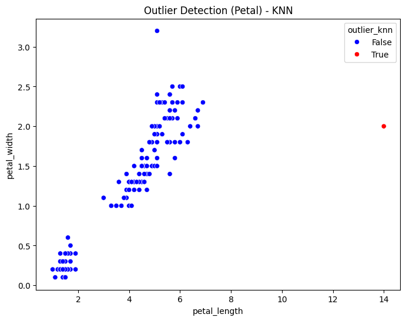
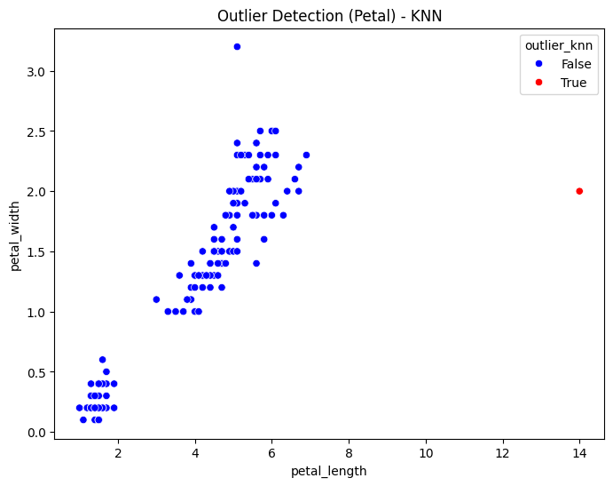

Identifikasi Outlier dengan K-Nearest Neighbors (KNN) dalam Pemahaman Data#
1. Mengapa KNN Bisa Digunakan untuk Deteksi Outlier?#
K-Nearest Neighbors (KNN) bisa digunakan untuk deteksi outlier karena algoritma ini bekerja berdasarkan kedekatan dan kepadatan data di sekitarnya. Berikut adalah beberapa alasan utama:
Mengukur Jarak dari Titik ke Tetangganya KNN menghitung jarak antara titik data dan tetangga terdekatnya. Jika sebuah titik memiliki jarak yang jauh lebih besar dibandingkan titik lain di sekitarnya, maka kemungkinan besar titik tersebut adalah outlier.
Berdasarkan Kepadatan Data (Density-Based Detection) KNN bisa digunakan untuk mendeteksi outlier dengan pendekatan kepadatan: Jika suatu titik memiliki sedikit tetangga dalam radius tertentu, maka titik tersebut kemungkinan outlier. Sebaliknya, titik yang berada dalam area dengan banyak titik lain dianggap normal.
Digunakan dalam Algoritma Local Outlier Factor (LOF) LOF adalah metode deteksi outlier berbasis KNN yang membandingkan kepadatannya dengan kepadatan tetangganya. Jika suatu titik memiliki kepadatan yang jauh lebih kecil dari tetangganya, maka kemungkinan besar titik tersebut adalah outlier.
Fleksibel untuk Data Berstruktur dan Tak Berstruktur KNN bisa digunakan untuk berbagai jenis data, baik data numerik maupun non-numerik. Ini membuatnya cocok untuk deteksi outlier dalam berbagai bidang, seperti analisis keuangan, deteksi anomali dalam jaringan, dan pengolahan citra.
2. Langkah-Langkah Deteksi Outlier dengan KNN#
Berikut adalah langkah-langkah deteksi outlier menggunakan KNN:
Persiapan Data Kumpulkan dataset yang akan dianalisis. Pastikan dataset berisi fitur numerik agar KNN dapat menghitung jarak dengan akurat. Lakukan pembersihan data jika diperlukan (misalnya, menangani nilai yang hilang atau tidak valid).
Pilih Jumlah Tetangga (k-Nearest Neighbors) Tentukan nilai k, yaitu jumlah tetangga yang akan digunakan untuk analisis. Nilai k yang kecil lebih sensitif terhadap outlier, sedangkan k yang besar lebih stabil tetapi bisa mengabaikan beberapa outlier.
Hitung Jarak Antar Titik Gunakan jarak Euclidean atau metrik lainnya untuk mengukur seberapa dekat setiap titik dengan tetangga-tetangganya. Misalnya, untuk dua titik A(x 1,y 1) dan ùêµ (ùë•2,ùë¶2)B(x 2‚Äã,y 2), jarak Euclidean dihitung sebagai: d(A,B)= (x 2−x 1) 2+(y 2−y 1)2
Hitung Kepadatan Titik (Local Reachability Density - LRD) Kepadatan lokal dihitung berdasarkan rata-rata jarak ke tetangga terdekatnya. Titik yang jauh dari kelompoknya akan memiliki kepadatan rendah dibandingkan tetangga lainnya.
Hitung Local Outlier Factor (LOF) LOF adalah rasio kepadatan titik terhadap kepadatan tetangganya. Jika LOF mendekati 1, titik tersebut normal. Jika LOF jauh lebih besar dari 1, titik tersebut adalah outlier.
Identifikasi dan Analisis Outlier Tandai titik-titik yang memiliki LOF tinggi sebagai outlier. Visualisasikan hasilnya menggunakan scatter plot atau box plot untuk melihat distribusi outlier dalam dataset.
Kesimpulan#
Deteksi outlier dengan KNN dan LOF efektif dalam menemukan titik yang berbeda dari pola umum dalam dataset. Proses ini berguna untuk mendeteksi anomali, membersihkan data, dan meningkatkan kualitas analisis dalam berbagai bidang seperti keuangan, cybersecurity, dan deteksi penipuan
%pip install pymysql
%pip install psycopg2
Requirement already satisfied: pymysql in /usr/local/python/3.12.1/lib/python3.12/site-packages (1.1.1)
[notice] A new release of pip is available: 24.3.1 -> 25.0.1
[notice] To update, run: python3 -m pip install --upgrade pip
Note: you may need to restart the kernel to use updated packages.
Requirement already satisfied: psycopg2 in /usr/local/python/3.12.1/lib/python3.12/site-packages (2.9.10)
[notice] A new release of pip is available: 24.3.1 -> 25.0.1
[notice] To update, run: python3 -m pip install --upgrade pip
Note: you may need to restart the kernel to use updated packages.
Perintah berikut digunakan untuk menginstal pustaka Python yang memungkinkan koneksi ke database:
import psycopg2
import pymysql
import numpy as np
import pandas as pd
import seaborn as sns
import matplotlib.pyplot as plt
from sklearn.neighbors import NearestNeighbors
def get_pg_data():
conn = psycopg2.connect(
host="pg-1c79828e-posgressqlpendata.i.aivencloud.com",
user="avnadmin",
password="AVNS_lNd8P_-IyQzpcnKg3Ye",
database="defaultdb",
port=14572
)
cursor = conn.cursor()
cursor.execute("SELECT * FROM bunga")
data = cursor.fetchall()
columns = [desc[0] for desc in cursor.description]
cursor.close()
conn.close()
return pd.DataFrame(data, columns=columns)
def get_mysql_data():
conn = pymysql.connect(
host="mysql-3f95b8aa-mysqll.g.aivencloud.com",
user="avnadmin",
password="AVNS_DYTBfDjLFuF2XVSXIqF",
database="flowers_mysql",
port=12288
)
cursor = conn.cursor()
cursor.execute("SELECT * FROM flowermysql")
data = cursor.fetchall()
columns = [desc[0] for desc in cursor.description]
cursor.close()
conn.close()
return pd.DataFrame(data, columns=columns)
# Ambil data dari kedua database
df_postgresql = get_pg_data()
df_mysql = get_mysql_data()
# Gabungkan berdasarkan kolom 'id'
df_merged = pd.merge(df_mysql, df_postgresql, on=["id", "class"], how="inner")
# Ambil data fitur numerik
feature_columns = ["petal_length", "petal_width", "sepal_length", "sepal_width"]
data_values = df_merged[feature_columns].values
# KNN Outlier Detection
def knn_outlier_detection(data, k=5):
neigh = NearestNeighbors(n_neighbors=k)
neigh.fit(data)
distances, _ = neigh.kneighbors(data)
avg_distances = distances[:, -1] # Ambil jarak k-terjauh sebagai skor
return avg_distances
# Hitung K-NN distance
df_merged["knn_distance"] = knn_outlier_detection(data_values, k=5)
# Tentukan threshold sebagai nilai rata-rata + 2 standar deviasi
threshold = df_merged["knn_distance"].mean() + 2 * df_merged["knn_distance"].std()
df_merged["outlier_knn"] = df_merged["knn_distance"] > threshold
# Cetak hasil
df_result = df_merged[["id", "class", "petal_length", "petal_width", "sepal_length", "sepal_width", "knn_distance", "outlier_knn"]]
print(df_result.to_string(index=False))
num_outliers = df_merged["outlier_knn"].sum()
print(f"\nJumlah outlier: {num_outliers}")
# Cetak data outlier
outliers = df_merged[df_merged["outlier_knn"]]
print("\nData Outlier:")
print(outliers.to_string(index=False))
# Visualisasi outlier berdasarkan K-NN
plt.figure(figsize=(8, 6))
sns.scatterplot(
x=df_merged["sepal_length"], y=df_merged["sepal_width"],
hue=df_merged["outlier_knn"], palette={False: "blue", True: "red"}
)
plt.title("Outlier Detection (Sepal) - KNN")
plt.show()
plt.figure(figsize=(8, 6))
sns.scatterplot(
x=df_merged["petal_length"], y=df_merged["petal_width"],
hue=df_merged["outlier_knn"], palette={False: "blue", True: "red"}
)
plt.title("Outlier Detection (Petal) - KNN")
plt.show()
id class petal_length petal_width sepal_length sepal_width knn_distance outlier_knn
1 Iris-setosa 1.4 0.2 5.1 3.5 0.141421 False
2 Iris-setosa 14.0 2.0 40.9 30.0 43.517123 True
3 Iris-setosa 1.3 0.2 4.7 3.2 0.264575 False
4 Iris-setosa 1.5 0.2 4.6 3.1 0.244949 False
5 Iris-setosa 1.4 0.2 5.0 3.6 0.223607 False
6 Iris-setosa 1.7 0.4 5.4 3.9 0.374166 False
7 Iris-setosa 1.4 0.3 4.6 3.4 0.316228 False
8 Iris-setosa 1.5 0.2 5.0 3.4 0.200000 False
9 Iris-setosa 1.4 0.2 4.4 2.9 0.346410 False
10 Iris-setosa 1.5 0.1 4.9 3.1 0.173205 False
11 Iris-setosa 1.5 0.2 5.4 3.7 0.331662 False
12 Iris-setosa 1.6 0.2 4.8 3.4 0.300000 False
13 Iris-setosa 1.4 0.1 4.8 3.0 0.200000 False
14 Iris-setosa 1.1 0.1 4.3 3.0 0.479583 False
15 Iris-setosa 1.2 0.2 5.8 4.0 0.556776 False
16 Iris-setosa 1.5 0.4 5.7 4.4 0.616441 False
17 Iris-setosa 1.3 0.4 5.4 3.9 0.387298 False
18 Iris-setosa 1.4 0.3 5.1 3.5 0.173205 False
19 Iris-setosa 1.7 0.3 5.7 3.8 0.509902 False
20 Iris-setosa 1.5 0.3 5.1 3.8 0.264575 False
21 Iris-setosa 1.7 0.2 5.4 3.4 0.360555 False
22 Iris-setosa 1.5 0.4 5.1 3.7 0.264575 False
23 Iris-setosa 1.0 0.2 4.6 3.6 0.538516 False
24 Iris-setosa 1.7 0.5 5.1 3.3 0.387298 False
25 Iris-setosa 1.9 0.2 4.8 3.4 0.424264 False
26 Iris-setosa 1.6 0.2 5.0 3.0 0.223607 False
27 Iris-setosa 1.6 0.4 5.0 3.4 0.244949 False
28 Iris-setosa 1.5 0.2 5.2 3.5 0.173205 False
29 Iris-setosa 1.4 0.2 5.2 3.4 0.173205 False
30 Iris-setosa 1.6 0.2 4.7 3.2 0.223607 False
31 Iris-setosa 1.6 0.2 4.8 3.1 0.173205 False
32 Iris-setosa 1.5 0.4 5.4 3.4 0.316228 False
33 Iris-setosa 1.5 0.1 5.2 4.1 0.424264 False
34 Iris-setosa 1.4 0.2 5.5 4.2 0.412311 False
35 Iris-setosa 1.5 0.1 4.9 3.1 0.173205 False
36 Iris-setosa 1.2 0.2 5.0 3.2 0.346410 False
37 Iris-setosa 1.3 0.2 5.5 3.5 0.346410 False
38 Iris-setosa 1.5 0.1 4.9 3.1 0.173205 False
39 Iris-setosa 1.3 0.2 4.4 3.0 0.300000 False
40 Iris-setosa 1.5 0.2 5.1 3.4 0.141421 False
41 Iris-setosa 1.3 0.3 5.0 3.5 0.244949 False
42 Iris-setosa 1.3 0.3 4.5 2.3 0.781025 False
43 Iris-setosa 1.3 0.2 4.4 3.2 0.300000 False
44 Iris-setosa 1.6 0.6 5.0 3.5 0.374166 False
45 Iris-setosa 1.9 0.4 5.1 3.8 0.412311 False
46 Iris-setosa 1.4 0.3 4.8 3.0 0.264575 False
47 Iris-setosa 1.6 0.2 5.1 3.8 0.300000 False
48 Iris-setosa 1.4 0.2 4.6 3.2 0.223607 False
49 Iris-setosa 1.5 0.2 5.3 3.7 0.244949 False
50 Iris-setosa 1.4 0.2 5.0 3.3 0.223607 False
51 Iris-versicolor 4.7 1.4 7.0 3.2 0.458258 False
52 Iris-versicolor 4.5 1.5 6.4 3.2 0.374166 False
53 Iris-versicolor 4.9 1.5 6.9 3.1 0.346410 False
54 Iris-versicolor 4.0 1.3 5.5 2.3 0.435890 False
55 Iris-versicolor 4.6 1.5 6.5 2.8 0.374166 False
56 Iris-versicolor 4.5 1.3 5.7 2.8 0.331662 False
57 Iris-versicolor 4.7 1.6 6.3 3.3 0.458258 False
58 Iris-versicolor 3.3 1.0 4.9 2.4 0.721110 False
59 Iris-versicolor 4.6 1.3 6.6 2.9 0.316228 False
60 Iris-versicolor 3.9 1.4 5.2 2.7 0.529150 False
61 Iris-versicolor 3.5 1.0 5.0 2.0 0.714143 False
62 Iris-versicolor 4.2 1.5 5.9 3.0 0.360555 False
63 Iris-versicolor 4.0 1.0 6.0 2.2 0.583095 False
64 Iris-versicolor 4.7 1.4 6.1 2.9 0.424264 False
65 Iris-versicolor 3.6 1.3 5.6 2.9 0.519615 False
66 Iris-versicolor 4.4 1.4 6.7 3.1 0.346410 False
67 Iris-versicolor 4.5 1.5 5.6 3.0 0.412311 False
68 Iris-versicolor 4.1 1.0 5.8 2.7 0.360555 False
69 Iris-versicolor 4.5 1.5 6.2 2.2 0.678233 False
70 Iris-versicolor 3.9 1.1 5.6 2.5 0.264575 False
71 Iris-versicolor 4.8 1.8 5.9 3.2 0.424264 False
72 Iris-versicolor 4.0 1.3 6.1 2.8 0.400000 False
73 Iris-versicolor 4.9 1.5 6.3 2.5 0.424264 False
74 Iris-versicolor 4.7 1.2 6.1 2.8 0.435890 False
75 Iris-versicolor 4.3 1.3 6.4 2.9 0.387298 False
76 Iris-versicolor 4.4 1.4 6.6 3.0 0.316228 False
77 Iris-versicolor 4.8 1.4 6.8 2.8 0.374166 False
78 Iris-versicolor 5.0 1.7 6.7 3.0 0.424264 False
79 Iris-versicolor 4.5 1.5 6.0 2.9 0.346410 False
80 Iris-versicolor 3.5 1.0 5.7 2.6 0.447214 False
81 Iris-versicolor 3.8 1.1 5.5 2.4 0.300000 False
82 Iris-versicolor 3.7 1.0 5.5 2.4 0.435890 False
83 Iris-versicolor 3.9 1.2 5.8 2.7 0.300000 False
84 Iris-versicolor 5.1 1.6 6.0 2.7 0.374166 False
85 Iris-versicolor 4.5 1.5 5.4 3.0 0.489898 False
86 Iris-versicolor 4.5 1.6 6.0 3.4 0.469042 False
87 Iris-versicolor 4.7 1.5 6.7 3.1 0.331662 False
88 Iris-versicolor 4.4 1.3 6.3 2.3 0.608276 False
89 Iris-versicolor 4.1 1.3 5.6 3.0 0.316228 False
90 Iris-versicolor 4.0 1.3 5.5 2.5 0.300000 False
91 Iris-versicolor 4.4 1.2 5.5 2.6 0.424264 False
92 Iris-versicolor 4.6 1.4 6.1 3.0 0.346410 False
93 Iris-versicolor 4.0 1.2 5.8 2.6 0.264575 False
94 Iris-versicolor 3.3 1.0 5.0 2.3 0.648074 False
95 Iris-versicolor 4.2 1.3 5.6 2.7 0.300000 False
96 Iris-versicolor 4.2 1.2 5.7 3.0 0.331662 False
97 Iris-versicolor 4.2 1.3 5.7 2.9 0.223607 False
98 Iris-versicolor 4.3 1.3 6.2 2.9 0.346410 False
99 Iris-versicolor 3.0 1.1 5.1 2.5 0.793725 False
100 Iris-versicolor 4.1 1.3 5.7 2.8 0.244949 False
101 Iris-virginica 6.0 2.5 6.3 3.3 0.556776 False
102 Iris-virginica 5.1 1.9 5.8 2.7 0.331662 False
103 Iris-virginica 5.9 2.1 7.1 3.0 0.458258 False
104 Iris-virginica 5.6 1.8 6.3 2.9 0.387298 False
105 Iris-virginica 5.8 2.2 6.5 3.0 0.387298 False
106 Iris-virginica 6.6 2.1 7.6 3.0 0.547723 False
107 Iris-virginica 4.5 1.7 4.9 2.5 0.877496 False
108 Iris-virginica 6.3 1.8 7.3 2.9 0.547723 False
109 Iris-virginica 5.8 1.8 6.7 2.5 0.616441 False
110 Iris-virginica 6.1 2.5 7.2 3.6 0.754983 False
111 Iris-virginica 5.1 2.0 6.5 3.2 0.424264 False
112 Iris-virginica 5.3 1.9 6.4 2.7 0.387298 False
113 Iris-virginica 5.5 2.1 6.8 3.0 0.374166 False
114 Iris-virginica 5.0 2.0 5.7 2.5 0.519615 False
115 Iris-virginica 5.1 2.4 5.8 2.8 0.519615 False
116 Iris-virginica 5.3 2.3 6.4 3.2 0.387298 False
117 Iris-virginica 5.5 1.8 6.5 3.0 0.387298 False
118 Iris-virginica 6.7 2.2 7.7 3.8 1.004988 False
119 Iris-virginica 6.9 2.3 7.7 2.6 0.927362 False
120 Iris-virginica 5.0 1.5 6.0 2.2 0.583095 False
121 Iris-virginica 5.7 2.3 6.9 3.2 0.300000 False
122 Iris-virginica 4.9 2.0 5.6 2.8 0.458258 False
123 Iris-virginica 6.7 2.0 7.7 2.8 0.678233 False
124 Iris-virginica 4.9 1.8 6.3 2.7 0.360555 False
125 Iris-virginica 5.7 2.1 6.7 3.3 0.374166 False
126 Iris-virginica 6.0 1.8 7.2 3.2 0.469042 False
127 Iris-virginica 4.8 1.8 6.2 2.8 0.387298 False
128 Iris-virginica 4.9 1.8 6.1 3.0 0.300000 False
129 Iris-virginica 5.6 2.1 6.4 2.8 0.374166 False
130 Iris-virginica 5.8 1.6 7.2 3.0 0.556776 False
131 Iris-virginica 6.1 1.9 7.4 2.8 0.509902 False
132 Iris-virginica 6.4 2.0 7.9 3.8 0.932738 False
133 Iris-virginica 5.6 2.2 6.4 2.8 0.435890 False
134 Iris-virginica 5.1 1.5 6.3 2.8 0.435890 False
135 Iris-virginica 5.6 1.4 6.1 2.6 0.663325 False
136 Iris-virginica 6.1 2.3 7.7 3.0 0.678233 False
137 Iris-virginica 5.6 2.4 6.3 3.4 0.435890 False
138 Iris-virginica 5.5 1.8 6.4 3.1 0.435890 False
139 Iris-virginica 4.8 1.8 6.0 3.0 0.316228 False
140 Iris-virginica 5.4 2.1 6.9 3.1 0.374166 False
141 Iris-virginica 5.6 2.4 6.7 3.1 0.346410 False
142 Iris-virginica 5.1 2.3 6.9 3.1 0.509902 False
143 Iris-virginica 5.1 1.9 5.8 2.7 0.331662 False
144 Iris-virginica 5.9 2.3 6.8 3.2 0.346410 False
145 Iris-virginica 5.7 2.5 6.7 3.3 0.400000 False
146 Iris-virginica 5.2 2.3 6.7 3.0 0.374166 False
147 Iris-virginica 5.0 1.9 6.3 2.5 0.412311 False
148 Iris-virginica 5.2 2.0 6.5 3.0 0.360555 False
149 Iris-virginica 5.4 2.3 6.2 3.4 0.616441 False
150 Iris-virginica 5.1 1.8 5.9 3.0 0.331662 False
151 ???? 5.1 3.2 5.8 1.0 2.092845 False
Jumlah outlier: 1
Data Outlier:
id class petal_length petal_width sepal_length sepal_width knn_distance outlier_knn
2 Iris-setosa 14.0 2.0 40.9 30.0 43.517123 True
 

Kode ini melakukan deteksi outlier menggunakan metode K-Nearest Neighbors (KNN) pada dataset Iris yang diperoleh dari dua database (MySQL dan PostgreSQL).
Data dari kedua database digabungkan berdasarkan kolom “id” dan “class”, lalu fitur numerik (petal_length, petal_width, sepal_length, sepal_width) digunakan untuk perhitungan jarak dengan algoritma KNN.
Jarak ke tetangga ke-5 dihitung untuk setiap titik sebagai indikator outlier, kemudian outlier diidentifikasi berdasarkan threshold rata-rata jarak ditambah 2 standar deviasi. Hasilnya:
Jumlah outlier dihitung dan ditampilkan dalam dataframe. Data outlier ditampilkan secara eksplisit. Visualisasi scatter plot dibuat untuk menunjukkan distribusi outlier pada Sepal dan Petal, dengan titik outlier berwarna merah.